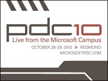
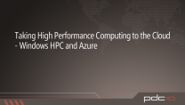
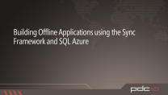
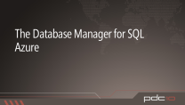
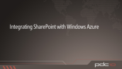
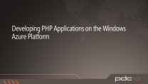

The Professional Developers Conference (PDC) is the definitive developer event focused on the technical strategy of the Microsoft developer platform. Attendees come from around the world to learn about the Microsoft developer platform directly from the people who make it happen.
The PDC is for developers, architects and technology leaders who are involved in making strategic technology decisions for their company or organization.
The Future of F#: Data and Services at your Finger Tips [WMV] [2010/10/30]
[WMV] [2010/10/30]Programming today exhibits a voracious appetite for information, and one of the most important trends in languages today is to make access to data and services fluent and seamless. Come and see the…
Windows Workflow Foundation Futures [WMV] [2010/10/30]
[WMV] [2010/10/30]Learn about the key investments we’re making in Windows Workflow Foundation (WF). See the WF improvements we’re working on for workflow authoring, hosting and management. Learn how we’re bringing WF…
Taking Advantage of Pinned Sites with Internet Explorer 9 and Windows 7 [WMV] [2010/10/30]
[WMV] [2010/10/30]Internet Explorer 9 allows developers to more tightly integrate their websites with the Windows 7 task bar and start menu. With Pinned Sites, you can add a website to the start menu, define Jump List…
Building High Performance Web Applications with the Windows Azure Platform [WMV] [2010/10/30]
[WMV] [2010/10/30]Windows Azure Platform enables developers to build dynamically scalable web applications easily. Come and learn how new application services like AppFabric Caching in conjunction with services like…
Lambdas, Lambdas Everywhere [WMV] [2010/10/30]
[WMV] [2010/10/30]Why care about C++0x lambda functions? Syntactically, they are nothing but sugar for function objects. However, they are an essential and enabling sugar that will change the way we will write C++ code…
Real-World Analysis and Optimization of XNA Framework Games on Windows Phone 7 [WMV] [2010/10/30]
[WMV] [2010/10/30]Good code design, performance tips, and a solid understanding of the platform are all essential to game development. Learn how to use the Microsoft’s Advanced Technology Group's (ATG) battle-tested…
Building Scale-Out Database Solutions on SQL Azure [WMV] [2010/10/30]
[WMV] [2010/10/30]SQL Azure provides an information platform that you can easily provision, configure, and use to power your cloud applications. In this session we will explore the patterns and practices that help you…
Better Code Through Smart Assertions and Unit Tests [WMV] [2010/10/29]
[WMV] [2010/10/29]Learn how to write better code and unit tests by using Code Contracts, Pex and Moles. Code Contracts provide a set of tools for design-by-contract programming. Pex is an advanced unit-testing tool…
ASP.NET + Packaging + Open Source = Crazy Delicious [WMV] [2010/10/29]
[WMV] [2010/10/29]Lots of great open source software is available, but it’s hard to figure out the best choice, get it, set it up, run it and update it. Visual Studio 2010 just came out but now we’ve got ASP.NET MVC…
Things You Need to Know Before Building XNA Games for Windows Phone 7 [WMV] [2010/10/29]
[WMV] [2010/10/29]So you have a cool idea for a game. This session covers some of the less obvious things you will need to know to turn your idea into reality using XNA Game Studio for Windows Phone. Topics include how…
Inside Windows Azure [WMV] [2010/10/29]
[WMV] [2010/10/29]Join Mark Russinovich, now working on Windows Azure, for an under the hood tour of the internals of Microsoft’s new cloud OS. Topics will include datacenter architecture, cloud OS architecture, and…
Microsoft Visual Studio IntelliTrace, Test Impact Analysis and Tier Interaction Profiling [WMV] [2010/10/29]
[WMV] [2010/10/29]As applications become more complex and pressures to decrease costs increase, we need tools to facilitate reducing the turn-around time for testers and developers to find and fix bugs. In this…
Unlocking the JavaScript Opportunity with Internet Explorer 9 [WMV] [2010/10/29]
[WMV] [2010/10/29]Modern day websites such as Office Web Applications use thousands of lines of JavaScript to deliver functionality similar to traditional desktop applications. Internet Explorer 9 introduces a new…
Windows Azure Storage Deep Dive [WMV] [2010/10/29]
[WMV] [2010/10/29]Windows Azure Storage is a scalable cloud storage service that provides the ability to store and manipulate blobs, structured non-relational entities, and persistent queues. In this session you will…
Identity & Access Control in the Cloud [WMV] [1:00:39] [2010/10/29]
[WMV] [1:00:39] [2010/10/29] Signing users in and granting them access is a core function of almost every cloud-based application. In this session we will show you how to simplify your user experience by enabling users to sign…
Building Web APIs for the Highly Connected Web [WMV] [2010/10/29]
[WMV] [2010/10/29]Are you building Web APIs for reaching any device, enabling mash-ups, or providing highly connected Web experiences? Then come to this session and learn how to build Web APIs your way in Windows…
Inside Internet Explorer 9 Performance  [WMV] [2010/10/29]
[WMV] [2010/10/29]Learn about what actually drives performance across the web and how you can make your sites faster. See how Internet Explorer has been redesigned from the ground up to take advantage of modern PC…
Open in the Cloud: Windows Azure and Java [WMV] [2010/10/29]
[WMV] [2010/10/29]The Windows Azure Platform is an open and interoperable platform which supports development using many programming languages and tools. In this session, you will see how to build large-scale…
Connecting Cloud & On-Premises Apps with the Windows Azure Platform [WMV] [2010/10/29]
[WMV] [2010/10/29]Not every application or service can be hosted entirely in the cloud. Cloud services often need to provide a combination of cloud-based data access as well as connectivity to on-premises assets in a…
Programming Languages Panel [WMV] [2010/10/29]
[WMV] [2010/10/29]Come hear from the top of the line language designers and personalities together for a thought provoking and fun panel discussion. This year, we are very excited to present a panel of experts…
Lessons Learned from Moving Team Foundation Server (TFS) to the Cloud [WMV] [2010/10/29]
[WMV] [2010/10/29]Team Foundation Server is a multi-tier client/server application that Microsoft is currently porting onto the Azure platform. In this session, the Team Foundation Server team will debrief on the…
3-Screen Coding: Sharing code between Windows Phone, Silverlight, and .NET [WMV] [2010/10/29]
[WMV] [2010/10/29]Get a preview of upcoming Visual Studio features that will allow you to share code between Microsoft .NET platforms. You’ll learn how to structure applications to maximize the amount of shared code,…
Enabling New Scenarios and Applications with Data in the Cloud [WMV] [2010/10/29]
[WMV] [2010/10/29]The cloud enables new scenarios for sharing and consuming data. In this session you will learn how to differentiate your applications by building them on top of Windows Azure platform and leveraging…
Creating Custom OData Services: Inside Some of The Top OData Services [WMV] [2010/10/29]
[WMV] [2010/10/29]What does it take to build a real-world OData (Open Data Protocol) service that’s secure, scalable and works great with all clients across the Web? Come to hear all the details on how some of the most…
Optimizing Performance for Silverlight Windows Phone 7 Applications [WMV] [2010/10/29]
[WMV] [2010/10/29]Hear about the key tips, tricks and common mistakes that were learned by analyzing several real world applications. See demos of how real apps are debugged. Also learn how to write world class…
Mysteries of Windows Memory Management Revealed, Part 2 of 2 [WMV] [2010/10/29]
[WMV] [2010/10/29]If you want to know the difference between System Committed memory and Process Committed memory, wondered what all those memory numbers shown by Task Manager really mean, or want to gain insight into…
Composing Applications with AppFabric Services [WMV] [2010/10/29]
[WMV] [2010/10/29]AppFabric provides a rich set of application platform services as part of the Windows Azure Platform to enable developers to create line of business applications that span multiple tiers and…
Code First Development with Entity Framework [WMV] [2010/10/29]
[WMV] [2010/10/29]The Entity Framework (EF) is making it easier than ever to build data-centric applications as quickly as possible. A key piece to this is Code First, an upcoming EF capability that enables a…
Things I Wish I Knew Three Months Ago about Building Windows Phone 7 Applications [WMV] [2010/10/29]
[WMV] [2010/10/29]The Windows Phone clients for Twitter and Facebook are two new, native-looking Windows Phone applications. Come hear about all the lessons learned while developing these applications. Learn insights…
Mysteries of Windows Memory Management Revealed, Part 1 of 2 [WMV] [2010/10/29]
[WMV] [2010/10/29]If you want to know the difference between System Committed memory and Process Committed memory, wondered what all those memory numbers shown by Task Manager really mean, or want to gain insight into…
Migrating and Building Apps for Windows Azure with VM Role and Admin Mode [WMV] [2010/10/29]
[WMV] [2010/10/29]Learn how to run your existing applications on Windows Azure using two new and highly requested features: VM Role and Admin Mode. We’ll demonstrate best practices for building and uploading…
LINQ, Take Two Realizing the LINQ to Everything Dream [WMV] [2010/10/28]
[WMV] [2010/10/28]At PDC a few years back, we introduced LINQ to solve the impedance mismatch between various data models by means of integrated query syntax in mainstream programming languages. Today, we’re seeing a…
The Future of C# and Visual Basic [WMV] [0:57:40] [2010/10/28]
[WMV] [0:57:40] [2010/10/28]Come hear technical fellow Anders Hejlsberg describe the roadmap for C# and Visual Basic in vNext and beyond. See how these languages are evolving to address developer needs, and get an update on…
Building Windows Phone 7 applications with the Windows Azure Platform [WMV] [2010/10/28]
[WMV] [2010/10/28]Learn how to build Windows Phone 7 applications that are backed by scalable cloud components hosted in Windows Azure. This demo-heavy session will cover best practices relating to communication,…
Building, Deploying, and Managing Windows Azure Applications [WMV] [2010/10/28]
[WMV] [2010/10/28]In order to take full advantage of Windows Azure and SQL Azure, you need to know more than just how to write the code. You need to know how to incorporate your application in a team environment,…
PDC10 keynotes with Steve Ballmer and Bob Muglia[WMV] [2:20:33] [2010/10/28]PDC10 keynotes with Steve Ballmer and Bob Muglia
WPF Today and Tomorrow [WMV] [2010/10/27]
[WMV] [2010/10/27]Drilling deep into where Windows Presentation Foundation (WPF) has been, and where it is going. During this session we'll share our focus areas for WPF today and tomorrow. We focus on several key…
What's New in SQL Azure? [WMV] [2010/10/27]
[WMV] [2010/10/27]SQL Azure is Microsoft’s cloud data platform. Initially offering a relational database as a service, there are new enhancements to the user experience and additions to the relational data services…
Windows Azure AppFabric Service Bus Futures [WMV] [2010/10/27]
[WMV] [2010/10/27]The Windows Azure AppFabric Service Bus allows for bi-directional connectivity and message exchange between applications, irrespective of whether those applications sit directly on the Internet or…
What's New in Windows Azure [WMV] [2010/10/27]
[WMV] [2010/10/27]At PDC 2010 we are introducing several new and exciting features for Windows Azure. In this session we will provide a high-level overview of the new capabilities including: new Virtual Machine Role,…
Understanding Windows Azure Connect [WMV] [2010/10/27]
[WMV] [2010/10/27]Windows Azure Connect is a new Windows Azure service that enables customers to setup secure, IP-level network connectivity between their Windows Azure compute services and existing, on-premise…
Inside Windows Azure Virtual Machines [WMV] [2010/10/27]
[WMV] [2010/10/27]Windows Azure is a cloud services operating system that provides developers with on-demand compute and storage to host, scale, and manage web applications on the internet through Microsoft…
Introduction to Windows Azure Marketplace DataMarket [WMV] [2010/10/27]
[WMV] [2010/10/27]Windows Azure DataMarket makes it easy for developers to consume data from a variety of trusted providers. Whether you need location-based services for your next mobile app or demographics data for…
Introduction to Windows Azure AppFabric Caching [WMV] [2010/10/27]
[WMV] [2010/10/27]This session will cover the concepts, scenarios and features of AppFabric Cache. Learn how AppFabric Caching can help you build high-performance & scalable web applications while lowering your total…
Introduction to SQL Azure Reporting [WMV] [2010/10/27]
[WMV] [2010/10/27]With the preview release of new SQL Azure Reporting capabilities, developers can now take advantage of familiar tools and development techniques to build reporting capabilities embedded within your…
Introduction to SQL Azure Data Sync [WMV] [2010/10/27]
[WMV] [2010/10/27]In this session we will show you how SQL Azure Data Sync enables on-premises SQL Server data to be easily shared with SQL Azure allowing you to extend your on-premises data to begin creating new…
Inside the Windows Azure Marketplace DataMarket [WMV] [2010/10/27]
[WMV] [2010/10/27]The new Windows Azure DataMarket service was built on the rest of the Windows Azure Platform, leveraging compute, storage, and security components. Find out about how the DataMarket service was…
Building Engaging Apps with Windows Azure Marketplace DataMarket [WMV] [2010/10/27]
[WMV] [2010/10/27]With the upcoming commercial release of Windows Azure DataMarket, learn about the new premium and public domain data available to power your consumer and business apps on any platform or device. A…
WebMatrix: The Web Reloaded [WMV] [2010/10/27]
[WMV] [2010/10/27]Microsoft WebMatrix is a free tool that simplifies building, customizing and publishing websites and web applications. In this session, we’ll take a tour of what is possible with WebMatrix, including…
Making Continuous Delivery a Reality from Product Backlog to Virtual Lab [WMV] [2010/10/27]
[WMV] [2010/10/27]Continuous integration is at the hub of most agile teams, but today it only extends to the compilation of source code and running of unit tests. See the end to end experiences of Visual Studio 2010…
Test Automation Everywhere [WMV] [2010/10/27]
[WMV] [2010/10/27]The MVC pattern in ASP.NET applications is a popular agile development pattern, thanks to a clean separation of concerns between the models, views and controllers within an application. To test each…
Parallel Computing Goes Mainstream [WMV] [2010/10/27]
[WMV] [2010/10/27]As processor core counts continue to grow year-over-year, it becomes increasingly important for developers to leverage parallel programming in order to maximize the performance of their software. This…
Deep Dive into Razor [WMV] [2010/10/27]
[WMV] [2010/10/27]Razor is the new syntax for building web applications in both ASP.NET Web Pages and ASP.NET MVC. It has a very concise syntax that blurs the transition between code and markup. We will start with a…
HTML5: More Than Just HTML5 [WMV] [2010/10/27]
[WMV] [2010/10/27]HTML5 is the future of the Web. Join this session to know more about the behind the scenes of this specification, including how Microsoft is actively contributing to this success with the W3C Working…
High Performance GPU-Accelerated Games and Technical Applications [WMV] [2010/10/27]
[WMV] [2010/10/27]Come hear about the Microsoft APIs that help you leverage the GPU in performance-critical scenarios like Media processing, games (casual and hard-core), and technical computing / visualization. For…
Adopting Direct2D and DirectWrite for Hardware Acceleration in Native Windows Applications [WMV] [2010/10/27]
[WMV] [2010/10/27]Take your Win32 applications to the next level of richness and interactivity with DirectX! This session is an opportunity to gain insights from Microsoft’s own experience migrating large-scale…
Get Accelerated! How Every Developer Can Use the GPU in Any Application [WMV] [2010/10/27]
[WMV] [2010/10/27]Will leveraging the GPU help your app? Come hear what you need to know about the GPU including the broad range of application areas where the GPU provides important benefits, the Microsoft…
Making Money with the Windows Phone Market Place [WMV] [2010/10/27]
[WMV] [2010/10/27]In Windows Phone 7, Microsoft provides a central mechanism for distributing your application or game to all Windows Phone users: the Windows Phone Marketplace. In this session, we’ll review the high…
Introducing HTML5 Graphics : Canvas and SVG [WMV] [2010/10/27]
[WMV] [2010/10/27]HTML5 adds new graphical capabilities with Canvas and SVG. Internet Explorer 9 leverages fully hardware acclerated graphics to enable developers to deliver new types of applications that were…
Best Practices for Building Cross-Browser Web Applications [WMV] [2010/10/27]
[WMV] [2010/10/27]Learn how developers can address the challenges with creating complex sites that are safe and that work well across browsers. Come see how Internet Explorer 9 makes it easier to create Web sites…
The Rich Mobile Web Today and Tomorrow [WMV] [2010/10/27]
[WMV] [2010/10/27]Come learn how to plan and design for today's - and tomorrow's - Rich Mobile Web, whether you have an existing site that you want to get mobilized or are starting from scratch.
Kung Fu Silverlight: Top Tips and Architectural Patterns and Practices [WMV] [2010/10/27]Learn about the rewards of using RIA Services together with development patterns, such as the Service Providers, Single Responsibility pattern, Messaging, and developing using the Model-View-ViewModel…
Taking High Performance Computing to the Cloud - Windows HPC and Azure[WMV] [2010/10/27]Scale-out or conveniently parallel HPC applications are well suited to running in Windows Azure. Windows HPC Server 2008 R2 SP1 provides a gateway for running existing HPC applications seamlessly on…
SharePoint in the Cloud: Developing Solutions for SharePoint Online[WMV] [2010/10/27]With the most recent release of SharePoint comes the ability to build and deploy applications of many types and flavors. Using SharePoint Server 2010, you can develop a wide variety of applications…
Microsoft BizTalk Server 2010 and Roadmap[WMV] [2010/10/27]Learn how BizTalk Server 2010 and AppFabric together help you create composite applications (building on Windows Azure, Windows Server and SharePoint) which connect to existing line-of-business (LOB)…
Management of your Access Control Service (ACS) Namespace[WMV] [2010/10/27]The Windows Azure AppFabric Access Control Service provides a simple way to add enterprise and web Single Sign On into your applications. In this session, we will discuss how you can configure ACS for…
Building Offline Applications using the Sync Framework and SQL Azure [WMV] [2010/10/27]In this session you will learn how to build a client application that operates against locally stored data and uses synchronization to keep up-to-date with a SQL Azure database. See how Sync Framework…
Introduction to Database Manager for SQL Azure[WMV] [2010/10/27]The database manager for SQL Azure (previously known as Microsoft® Project Code-Named “Houston”) is a lightweight and easy to use database management tool for SQL Azure databases. The web-based tool…
Integrating SharePoint with Windows Azure[WMV] [2010/10/27]SharePoint 2010 provides many ways to integrate with Windows Azure. From simple SQL Azure data-centric applications to complex workflow that leverages custom Azure services, there is great potential…
Developing PHP Applications on the Windows Azure Platform[WMV] [2010/10/27]Microsoft’s Windows Azure Platform provides a comprehensive set of services for building and running scalable PHP applications targeting cloud. In this session we go on a coding tour using open source…
Building Business Applications in the Cloud with CRM Online[WMV] [2010/10/27]Microsoft Dynamics CRM Online is all about providing compelling business applications to your customer and accelerating development of your applications in the cloud. The upcoming 2011 release has a…